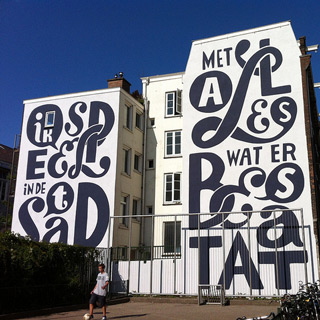
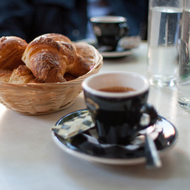

Amsterdam
Brooklyn four loko pickled, try-hard ennui selvage selfies YOLO blog food truck dreamcatcher stumptown cray fixie mumblecore. Seitan beard Carles retro.
Provence
Artisan seitan keytar, cray Kickstarter Odd Future church-key ethnic wayfarers Brooklyn.
Tasmania

Cliche keffiyeh kogi, High Life American Apparel Etsy Blue Bottle fap typewriter Tumblr dreamcatcher.